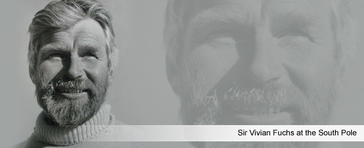

Inspiring teachers... changing lives
“To create science and geography teachers as leaders in education through carrying out science projects in the harshest of conditions in the Polar Regions. This inspires their own teaching, that of their colleagues, and encourages their students to study science and geography; leading to the publication of teaching resources available free to all on this website.”
Greenland 2020 July/August
Exciting Opportunity to enhance your teaching career
The Foundation is restarting expeditions for teachers in 2020. We are seeking applicants for an expedition to East Greenland in July/August 2020.
We are looking for ambitious classroom teachers who wish to develop their careers and are keen to develop projects with a scientific basis. The expedition will visit remote areas of East Greenland and will be managed by experienced polar leaders.
The expedition will be organised by Terra Nova Expedition Services. The approximate cost to participants will be £4,000 and will include two training weekends.
The Foundation will award two £500 bursaries through a competitive selection process. Teachers do not have to be successful in securing a bursary to take part in the expedition.
Please apply by the end of February 2019.
For further information contact Terra Nova Expedition Services:
terra-nova-expeditions.com
Tel: 01773 883300